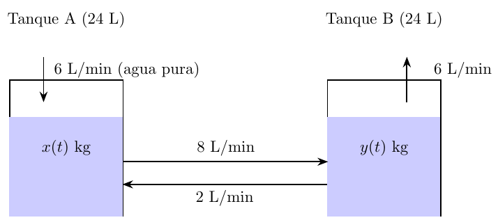

Trayectorias Matemáticas para llegar al módulo "Ecuaciones Diferenciales Ordinarias"
Ingeniería Civil

Contenidos del módulo "Ecuaciones Diferenciales Ordinarias"
- Unidad 1
- Series: series de potencias, intervalo de convergencia, series de Taylor.
- Ecuaciones diferenciales ordinarias de primer orden: variables separables, lineales, exactas, ED0 de Bernoulli
- Modelos que usan EDOs de primer orden: modelo logístico de Verhulst, mezcla de soluciones, leyes de Newton, circuitos eléctricos.
- Unidad 2
- Ecuaciones diferenciales ordinarias de segundo orden: coeficientes indeterminados, variación de parámetros.
- Solución de una EDO usando series de potencias.
- Transformada de Laplace y sus propiedades. Uso de la transformada para resolver EDOs de primer y segundo orden.
- Unidad 3
- Sistemas de EDOs: definición
- Solución de sistemas de EDOs usando transformada de Laplace.
- Solución de sistemas de EDOs usando la matriz exponencial
- Modelos que usan sistemas de EDOs: mezcla de soluciones, resortes acoplados, circuitos eléctricos.
Un ejemplo: dinámica de poblaciones
El modelo logístico de Verlhust es \[\label{pob-log1} \left\{ \begin{aligned} \frac{dP}{dt}&=\frac rKP(K-P)\\ P(0)&=P_0. \end{aligned} \right. \] y las cantidades que ahí aparecen tienen la siguiente interpretación:
-
La cantidad \(P=P(t)\) representa la población en un tiempo \(t\).
-
La cantidad \(\dfrac{dP}{dt}\) representa la tasa de cambio instantánea de la población con respecto al tiempo Cálculo I .
׿Por qué "Cálculo I"?
En la Unidad I Cálculo I se introduce el concepto de derivada y su interpretación como tasa de cambio instantánea. Este concepto es clave para entender lo que significa la ecuación diferencial y porqué sirve como modelo para representar una determinada población.
-
El valor de \(K\) representa la capacidad máxima del sistema. Usualmente es un dato del problema.
-
La constante \(r\) representa una tasa neta de natalidad (puede ser negativa).
-
El producto \(P(K-P)\) se puede interpretar como una interacción entre la población actual y el “espacio disponible”.
Solución de la ecuación logística
Para resolver esta EDO se usa el método de separación de variables: Suponiendo que \(P>0\) (población positiva) y \(P<K\) (la población no supera la capacidad máxima disponible) entonces \(P\) verifica: \[\int\frac{K}{P(K-P)}\mathrm{d}P=\int r\mathrm{d}t.\] Para resolver la integral del lado izquierdo, se usa fracciones parciales Álgebra
¿Por qué "Álgebra"?
En la Unidad III del módulo Álgebra se estudia la factorización de polinomios y el método de descomposición en fracciones parciales.
¿Por qué "Cálculo I"?
En la Unidad III de Cálculo I se estudian las técnicas de integración, incluyendo el cálculo de integrales indefinidas y definidas.
¿Por qué "Introducción a las Matemáticas"?
En las Unidades I y II de Introducción a las Matemáticas se estudian los conceptos básicos de lo que son expresiones algebráicas, lo que es una ecuación, que significa "despejar una variable". En la Unidad III se estudian funciones trigonométricas y exponenciales, y sus inversas.
Algunas preguntas que se hacen en este tipo de problemas
Dado que la población inicial es \(P(0)=P_0\) y suponiendo que la población luego de 1 año es \(P(1)=P_1\),
-
¿Cuál es la población en un tiempo \(t>0\)?
Para responder hay que determinar \(A\) y \(r\) resolviendo ecuaciones usando \(P(0)\) y \(P(1)\): \[P(0)=\frac{K}{1+A}, \quad P(1)=\frac{K}{1+Ae^{-r}},\] de donde se obtiene que \[A=\frac{K-P_0}{P_0}, \quad r=\ln\left(\frac{P_1(K-P_0)}{P_0(K-P_1)}\right).\] Introducción a las Matemáticas
׿Por qué "Introducción a las Matemáticas"?
Nuevamente hay que lidiar con ecuaciones que involucran funciones exponciales, trigonométricas y sus inversas
Algunas preguntas que se hacen en este tipo de problemas
-
¿Cuál es la población cuando \(t\to\infty\)?
Para responder esta pregunta debemos calcular el límite cuando \(t\to\infty\) de \(P(t)\). Se tiene que \[\lim_{t\to\infty}P(t)=\lim_{t\to\infty}\frac{K}{1+Ae^{-rt}}=K.\] Cálculo I
׿Por qué "Cálculo I"?
En la Unidad I de Cálculo I se estudian el concepto de límite y límites infinitos y al infinito, lo que permiten calcular el comportamiento asintótico de funciones como \(P(t)\) cuando \(t\to\infty\).
Algunas preguntas que se hacen en este tipo de problemas
-
¿Cuánto tiempo tarda la población en alcanzar cierto valor \(P_0 < P_2 < K \)?
Para responder se plantea la ecuación \(P(t)=P_2\) y se resuelve para \(t\): \[P_2=\frac{K}{1+Ae^{-rt}}\implies t=\frac1r\ln\left(\frac{P_2(K-P_0)}{P_0(K-P_2)}\right). \] Luego se interpreta que el número obtenido es el tiempo que tarda la población en alcanzar el valor \(P_2\) medido en las mismas unidades de tiempo que se usaron para definir \(r\) y \(t\). Introducción a las Matemáticas
׿Por qué "Introducción a las Matemáticas"?
Nuevamente hay que lidiar con conceptos básicos de ecuaciones, despeje de variables y funciones elementales, necesarios para resolver ecuaciones como \(P(t)=P_2\) y despejar \(t\).
Mezcla de soluciones

Dos tanques, cada uno de los cuales contiene 24 litros de una solución salina, están conectados entre sí mediante unos tubos. El tanque A recibe agua pura a razón de 6 litros/minuto y el líquido sale del tanque B con la misma razón; además, se bombean 8 litros/minuto de líquido del tanque A al tanque B y 2 litros/minuto del tanque B al tanque A. Los líquidos dentro de cada tanque se mantienen bien revueltos, de modo que cada mezcla es homogénea. Si en un principio la solución salina en el tanque A contiene \(x_0\) kg de sal y la del tanque B contiene inicialmente \(y_0\) kg de sal, determinar la masa de sal en cada tanque en un instante \(t>0\).
\[ \left\{ \begin{aligned} x'(t) &= \frac{1}{12}y(t) - \frac{1}{3}x(t),&&x(0)=x_0, \\ y'(t) &= \frac{1}{3}x(t) - \frac{1}{3}y(t),&&y(0)=y_0. \end{aligned} \right. \] En forma matricial Álgebra Lineal
¿Por qué "Álgebra Lineal"?
En la Unidad I de Álgebra Lineal se estudian sistemas de ecuaciones lineales y su representación matricial, necesario para entender ambas formas de ver un sistema de EDOs lineales.
Para resolver este sistema se puede usar la Matriz Exponencial o la Transformada de Laplace.
Solución usando la matriz exponencial
La solución tiene la forma \(\mathfrak X(t) = e^{At} \mathfrak X(0)\). Para calcular \(e^{At}\) primero se calculan los valores propios de la matriz: \[ \lambda_1 = -\dfrac{1}{6}, \qquad \lambda_2 = -\dfrac{1}{2}, \] luego los vectores propios asociados \[ v_1 = \begin{pmatrix} 1 \\ 2 \end{pmatrix}, \qquad v_2 = \begin{pmatrix} 1 \\ -2 \end{pmatrix}. \]
Así se tiene \[ e^{At} = V\begin{pmatrix} e^{-t/6} & 0 \\ 0 & e^{-t/2} \end{pmatrix} V^{-1}\qquad V= \begin{pmatrix} 1 & 1 \\ 2 & -2 \end{pmatrix}, V^{-1}=\frac14 \begin{pmatrix} 2 & 1 \\ 2 & -1 \end{pmatrix}, \]
y por tanto, la solución es \[ \mathfrak X(t)= \begin{pmatrix} \frac{2x_0+y_0}{4} e^{-t/6} + \frac{2x_0-y_0}{4} e^{-t/2} \\[1em] \frac{2x_0+y_0}{2} e^{-t/6} - \frac{2x_0-y_0}{2} e^{-t/2} \end{pmatrix}. \] Álgebra Lineal
¿Por qué "Álgebra Lineal"?
En la Unidad II de Álgebra Lineal se estudia el concepto de vectores. En la Unidad III se estudian las propiedades de las transformaciones lineales, lo que incluye el estudio de valores y vectores propios de una matriz.
Solución usando Transformada de Laplace
Aplicando la Transformada de Laplace al sistema de ecuaciones, se obtiene \[ \begin{pmatrix} s+1/3 & -1/12 \\ -1/3 & s+1/3 \end{pmatrix} \begin{pmatrix} X(s) \\ Y(s) \end{pmatrix} = \begin{pmatrix} x_0 \\ y_0 \end{pmatrix}. \] resolviendo el sistema de ecuaciones algebraicas Álgebra Lineal
¿Por qué "Álgebra Lineal"?
En la Unidad I de Álgebra Lineal se estudian como resolver sistemas de ecuaciones lineales: eliminación Gaussiana, método de Gauss-Jordan, descomposición LU, regla de Cramer.
Descomponiendo en fracciones parciales Álgebra
¿Por qué "Álgebra"?
Nuevamente se usa el método de descomposición en fracciones parciales.
- En otros modelos (resortes acoplados, circuitos eléctricos, etc.) se obtienen
sistemas similares donde pueden aparecer
valores propios complejos
, lo que deriva en soluciones oscilatorias×
Esto requiere que el estudiante sepa lo que es un número complejo, lo que se revisa en la Unidad III de Álgebra.
.×Al tener valores propios complejos, las soluciones del sistema son oscilatorias, lo que requiere conocer funciones trigonométricas, lo que se estudia en la Unidad II de Introducción a las Matemáticas.
- Al igual que con los sistemas de EDOs, al estudiar EDOs lineales de orden 2 o
mayor, aparece el concepto de
independencia lineal
de soluciones.×
El concepto de independencia lineal se estudian en la Unidad II de Álgebra Lineal.